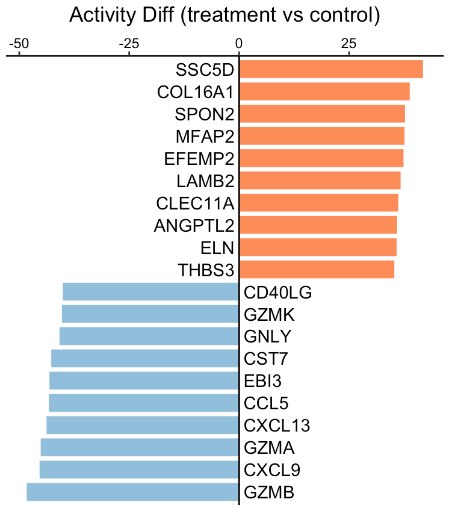

Secreted protein activity difference between two phenotypes
Source:vignettes/bulkDiff.Rmd
bulkDiff.RmdThis tutorial demonstrates how to infer the difference of secreted protein activity between two phenotypes, such as treatment vs control, tumor vs normal, or responder vs non-responder. The input expression values, from either RNA sequencing or MicroArray, should be transformed by log2(x+1). Of note, x could be FPKM, RPKM, or TPM for RNA-Seq data.
For this demonstration, we employ a clinical cohort of patients with discoid lupus erythematosus, who received a single dose of anti-IFNG antibody AMG 811. Using the SecAct framework, we will estimate the differences in secreted protein activity between treatment and control groups.
Prepare expression data
This section shows how to read an expression matrix to R environment and separate them into the treatment and control patient group.
library(SecAct)
# prepare expression matrix
dataPath <- file.path(system.file(package="SecAct"), "extdata/")
expr <- read.csv(paste0(dataPath,"GSE100093.IFNG.expr.gz"), sep="\t")
# read meta infomation
meta <- read.csv(paste0(dataPath,"GSE100093.IFNG.meta"), sep="\t")
# subset treatment and control group
expr.treatment <- expr[, meta[,"Treatment"]=="Anti-IFNG"]
expr.control <- expr[, meta[,"Treatment"]=="Control"]Infer activity difference
We input expr.treatment and expr.control
into SecAct.activity.inference to infer the activity
difference of >1000 secreted proteins between treatment and control
groups. SecAct calculates the OVERALL activity difference
between two phenotypes with default setting
is.singleSampleLevel = FALSE. You can also obtain the
activity change for each sample in expr.treatment by
setting is.singleSampleLevel = TRUE. Of note, if your
samples are paired, just change the defult setting
is.paired = FALSE to TRUE.
# infer activity difference; ~2 mins
res <- SecAct.activity.inference(
inputProfile = expr.treatment,
inputProfile_control = expr.control,
is.singleSampleLevel = FALSE,
is.paired = FALSE
)
# res$zscore stores activity difference
act.diff <- res$zscore
# show activity difference
head(act.diff)
## Diff
## A1BG 12.412416
## A2M 1.654828
## A2ML1 -7.130571
## AADACL2 8.538400
## ABHD15 1.720629
## ABI3BP -8.170191A positive value means the secreted protein has high activity in the treatment group while a negative value means the secreted protein has high activity in the control group.
# show IFNG activity difference
act.diff["IFNG","Diff"]
## [1] -35.67649We can see that IFNG activity was reduced as expected, consistent with the treatment group receiving anti-IFNG therapy.
Visualize activity difference
User can visualize any secreted proteins of interest using
SecAct.bar.plot. Here, we select the top up- and
down-regulated secreted proteins (SPs) between treatment and control as
examples.
# select the top secreted proteins
n <- 10
up.SPs <- names(sort(act.diff[,"Diff"],decreasing=T))[1:n]
down.SPs <- names(sort(act.diff[,"Diff"]))[1:n]
SPs <- c(up.SPs, down.SPs)
# user can assign any secreted proteins to SPs
# generate a vector
fg.vec <- act.diff[SPs,"Diff"]
# visualize in bar plot
SecAct.bar.plot(fg.vec, title="Activity Diff (treatment vs control)")
A positive value means the secreted protein has high activity in the treatment group while a negative value means the secreted protein has high activity in the control group.
Run against to differential profile
If you already have a differential profile (or signature) instead of
the expression matrix from two phenotypes, you can directly run
SecAct.activity.inference with
is.differential = TRUE.
# compare two phenotypes to get a differential profile
expr.diff <- rowMeans(expr.treatment) - rowMeans(expr.control)
# generate input profile
expr.diff <- as.matrix(expr.diff, ncol=1)
colnames(expr.diff) <- "Diff"
# Run against to differential profile
res <- SecAct.activity.inference(
inputProfile = expr.diff,
is.differential = TRUE
)
# res$zscore stores activity difference
act.diff <- res$zscore
# show activity difference
head(act.diff)
## Diff
## A1BG 12.412416
## A2M 1.654828
## A2ML1 -7.130571
## AADACL2 8.538400
## ABHD15 1.720629
## ABI3BP -8.170191